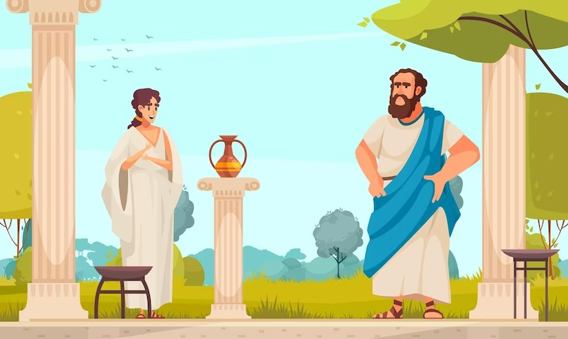

Período Socrático
Final do Século V e todo século IV a.C, em Atenas
O período socrático, segundo pesquisas realizadas, é definido como o período da Grécia clássica, abrange o final do século V e todo o século IV antes de Cristo. Iniciou com a ascensão de Atenas, após a vitória dos gregos sobre os persas nas Guerras Médicas. Foi um período em que a democracia se desenvolveu, a arte de falar em público era necessária, a vida artística entra no apogeu e Atenas domina a Grécia com seu império comercial e militar. Segundo Chauí, foi quando a Filosofia investiga as questões humanas, isto é, a ética, a política e as técnicas.
Naquela época, Atenas tornou-se o centro da vida social, política e cultural da Grécia, vivendo seu período de esplendor, conhecido como o Século de Péricles. A cidade se desenvolvia, o comércio, o artesanato e as artes militares.
Segundo Chauí, a democracia grega possuía, entre outras, duas características de grande importância para o futuro da Filosofia. Em primeiro lugar, a democracia afirmava a igualdade de todos os homens adultos perante as leis e o direito de todos de participar diretamente do governo da cidade, da polis.
Em segundo lugar, e como consequência, a democracia, sendo direta e não por eleição de representantes, garantia a todos a participação no governo, e os que dele participavam tinham o direito de exprimir, discutir e defender em público suas opiniões sobre as decisões que a cidade deveria tomar. Surgia, assim, a figura política do cidadão. (Nota: Devemos observar que estavam excluídos da cidadania o que os gregos chamavam de dependentes: mulheres, escravos, crianças e velhos. Também estavam excluídos os estrangeiros.) (CHAUÍ, 2016)
Durante as assembleias, aquele que detinha a arte de falar em público tinha maior poder de persuasão, tornando essa arte fundamental na vida do cidadão, só assim sua opinião seria aceita durante as assembleias. O poder da palavra era essencial. No entanto, surge nesse período a figura importantíssima do sofista, que educava os cidadãos para que dominassem o uso das palavras.
O sofista
O sofista é um erudito com vasto conhecimento cultural sobre uma infinidade de assuntos. Eles vieram da Ásia Menor trazendo esse conhecimento com a finalidade de educar os cidadãos Atenienses para que estes dominassem o uso da palavra.
Eles possuíam a arte da argumentação e da persuasão, qualidades essenciais para que os Atenienses pudessem exercer a democracia e defender suas posições perante seus pares. Pode-se dizer que o sofista ensina a retórica. Fazendo uso das palavras de Gutthrie:
A retórica ensina, em primeiro lugar, que o que conta não é o fato em si, mas o que dele aparece, aquilo que pode persuadir os homens. É a arte do logos que não é somente discurso e raciocínio, mas também aparência ou opinião, na medida em que estas se opõem aos fatos, e sua finalidade é a persuasão, em honra dos sofistas deve ser dito que a persuasão é preferível à força e à violência e que a retórica é, por excelência, uma arte democrática que não pode florescer numa tirania. (GUTTHRIE 1971, apud Poliedro, Vitor Braga, Romulo, pag. 55)
Através dessas técnicas surgiram os grandes filósofos da época. Sem tirar a importância dos demais, destacamos três principais filósofos do período socrático e dedicaremos um capítulo para cada um deles. São eles: Sócrates, Platão e Aristóteles.
Sócrates
Titulado como um dos mais importantes filósofos da antiguidade, Sócrates nasceu em Atenas por volta de 470 a.c, e foi o principal revolucionário da filosofia da Grécia antiga. Contribui de forma tão intensa, que suas ideias e pensamentos perpetuam até os dias atuais.
Nem sempre Sócrates foi filósofo e influenciador social, vinha de uma família humilde, seu pai escultor e sua mãe uma parteira, Sócrates inicialmente ajudava seu pai com o serviço de escultor. Nunca frequentou escola, nem aprendeu a ler ou a escrever. Situação que corrobora com o fato de não ter nenhuma obra/livro do mesmo.
Tudo que sabe sobre ele é através de obras de Platão e Xenofontes. Os pensamentos e ideais de Sócrates eram baseados na existência do ser e da alma humana, na capacidade de raciocínio, no questionamento e na ética social. Método este considerado revolucionário em uma época em que as pessoas estavam mais preocupadas na origem do mundo e do universo.
ócrates era totalmente o oposto dos filósofos de sua época. Os sofistas, como eram conhecidos tais filósofos, defendiam que o conhecimento era fácil de se adquirir, claro por um bom preço. Não tinham moradia fixa, viviam do ensino de polis em polis. Argumentavam sobre tudo, mas nunca se questionavam em nada, não se importam com a veracidade do que transmitiam, se preocupavam apenas em vencer discussões e ensinar as pessoas a defender seus interesses pessoais. Já Sócrates sempre pensou no bem comum e na melhoria de onde vivia, para ele o mais importante era conhecer a si próprio e se desapegar dos bens materiais.
Na visão de Sócrates eles erraram em não se importarem a ensinar a virtude e a moral ao homem. Assim, confrontava-os a ponto de sentirem envergonhados ou de admitirem sua total arrogância. Fato este que fez com que Sócrates possuísse vários seguidores, onde parava para dialogar em questão de minutos várias pessoas cercavam ao redor. E na medida que seus seguidores aumentavam, crescia o número de inimigos e perseguidores.
Aos 70 anos, Sócrates é preso acusado de recusar os Deuses e de corromper a juventude. Sua condenação era infundada e travestida de corrupção, afim de fazer com que Sócrates abandonasse a cidade. Porém o mesmo, nunca negou seus ideais e se defendeu de forma mais inteligente o possível. Por ser um homem ético e moral, por optar por seus princípios e ideais ao invés da vida e liberdade, Sócrates e condenado a morrer por envenenamento, de modo que ele mesmo ingerisse na frente do público.
Referências
BRAGA, R. V. Ensino Médio de Filosofia. Ed reservada. São José dos Campos: Editora Poliedro, 2015.
CHAUÍ, Marilena. Síntese sobre os períodos da Filosofia Grega: Os Filósofos da Natureza, Sócrates e Platão. Jul. 2013.
Disponível em: Os períodos da Filosofia grega.